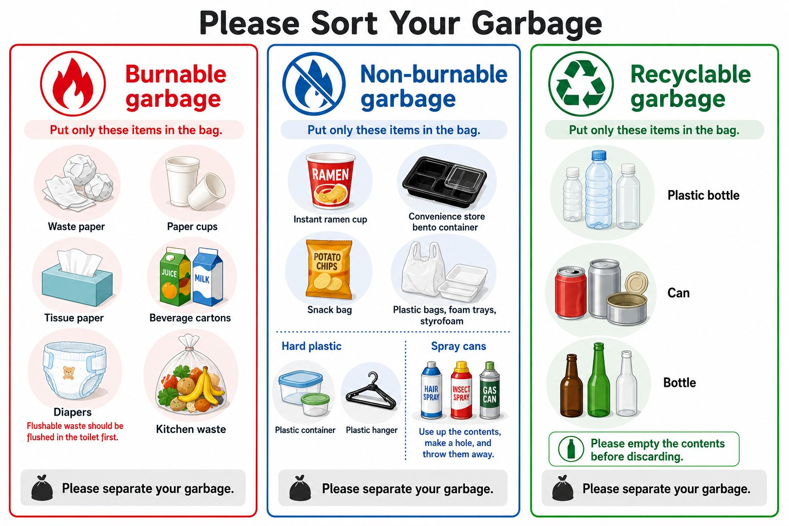

地址
Tokyo Toshima City Zōshigaya 2-chōme-22-16 Zōshigaya 〒171-0032
标识


- 停车场内的**银色垃圾箱**
- 备案编号： M130056625
从羽田机场前往

所有路线均可使用 IC 卡（Suica/PASMO）。如果重视舒适和简便， 从羽田乘出租车 是最简单的方式。
这里汇总了您入住期间需要了解的全部信息。
Tokyo Toshima City Zōshigaya 2-chōme-22-16 Zōshigaya 〒171-0032
所有路线均可使用 IC 卡（Suica/PASMO）。如果重视舒适和简便， 从羽田乘出租车 是最简单的方式。
使用密码即可进入

如果您深夜到达，请在出行前记下此密码。
入住时间为下午4点。有时可以安排提前入住，如计划提早到达请与我们联系， 我们会尽力配合（很抱歉无法保证）。
退房时间严格为上午10点。如需延迟退房，我们会尽力配合， 但请注意必须事先告知我们。
出发前，如能配合以下事项， 我们将不胜感激：
房内共有 1个 Wi-Fi 网络 可供使用。
Wi-Fi 信息也标示在墙上的 猫咪 Wi-Fi 提示牌 上。


📺 如有需要，可使用您本人的账号登录各类视频服务。
退房前请务必退出登录。
💡 如果电视打不开，请确认电源线是否插好，并按一下 电视机身上的电源键。

🧴 无需自行投放洗涤剂。
洗衣机会自动投放洗涤剂。
💡 *视衣物的量，烘干可能需要更长时间。* ⚠ *线屑过滤网满了请清理，另外请勿往滚筒里塞得过满。*

💡 使用空调时请关好门窗，以提高效率。
⚠ 离开房间或外出时，请务必 关闭 空调。

如果感觉吸力变弱，请检查并清空集尘盒。

⚠ 请 不要将金属容器、铝箔或密闭容器 放入 微波炉内。 请只使用可用于微波炉的餐具。

煮好之后：
⚠ 请勿将内胆直接放在灶台上，也不要装着水放进水槽。
请务必清洗并擦干后再放回。
本住宅配有地暖系统。请按以下说明操作。

地暖升温需要一些时间。不需要时请关闭。
使用灶具时请仔细按照以下步骤操作。
⚠ 使用后请务必关火。切勿让灶具处于
无人看管的状态。

🔥 *如果点不着火，请松开后再试一次。* 请确认炉头周围没有水或油。
⚠ 请谨慎使用 — 这个小烤箱升温极快，食物很容易烤焦。
推荐时间： 3–5 分钟，并全程留意。
💡 煮好之后：
– 关闭所有火源
– 确认没有残留的燃气味
– 待灶具冷却后清理洒落的污渍

🧽 洗涤剂：如需洗涤剂，请加入投放槽内。 多数餐具用标准程序即可洗净。
⚠ 请勿清洗木质餐具、菜刀及易损物品。
💡 为达到最佳效果，请勿放得过满，碗类请开口朝下摆放。

💡 如果水温过热或过冷，请在此面板调节，而不是调节淋浴龙头。
⚠️ 请勿关闭主电源开关（運転）。

如果绿灯没亮，请按“運転”将其打开。
💡 小贴士：
– 淋浴前请务必确认水温。
– 如果没有热水，请确认绿灯是否亮着。
– 使用后请关闭地暖以节约能源。

💡 提示：推荐的淋浴水温为 38–41 °C.
⚠ 调到 40 °C 以上时请注意，水可能会非常烫。

💡 经过一小段时间后会自动停止。 ⚠ 请勿站在马桶座圈上。
部分房间的照明遥控器不同，但基本用法相同： 电源 ON/OFF、全亮、调亮、调暗。


💡 提示：如果灯没有反应，请将遥控器直接对准吸顶灯再试一次。

我们在洗漱台的镜柜内准备了 干净的牙刷套装 和 杯子 。 请打开镜柜的柜门取用。
💡 用过的牙刷可以带走，请随意。
日本的垃圾规则较难理解，我们已将其简化。请将垃圾分成 3类 ，分别装入不同的塑料袋，再按下述方式投放到停车场的银色垃圾箱内。如果垃圾未妥善分类，或散落在地板上及房间各处，可能会加收清洁费或处理费。

除上述规则外，请勿将用过的行李箱或大件物品留在 室内。如遗留未经许可的物品，我们可能会要求您承担相关费用。若垃圾混装严重（例如厨余与易拉罐混在一起），回收公司可能会拒收，或加收处理费用。
使用厨房后，请将用过的餐具、器皿和炊具清洗干净并放回原位。感谢您的配合，让下一位客人也能使用干净的厨房。
本住宿位于住宅区，敬请体谅。 22:00 至 8:00期间，请将噪音控制到最低。
请勿穿鞋进入室内。
本住宿 全面禁烟 — 室内禁止吸烟及使用电子烟。
4楼的露台设有指定吸烟区。请勿在 道路上吸烟 — 这在东京是被严格禁止的。
自驾前来时，请使用附近的收费停车场。
出于治安考虑，并依照地方政府的指导，入口处设有监控摄像头。
我们很喜欢动物，但出于过敏方面的考虑，本住宿谢绝携带宠物。
请勿带来预订人数以外的客人。不允许超过最大可住人数。
如损坏了任何物品，请立即告知我们。轻微的问题通常不会收费。较大的问题 （例如电视屏幕），我们会在退房前与您商定费用，以免产生意外。
对这些规则的任何例外，均须事先获得同意。感谢配合！
如需紧急服务（急救、报警、消防），请立即拨打电话。请按本指南 首页记载的内容告知您所在的位置。
* 所有地点大约都在步行10分钟范围内。


* 所需时间为大致参考，会因时段和换乘情况有所不同。
入住期间如有任何疑问，请通过预订 App 的消息功能与我们联系